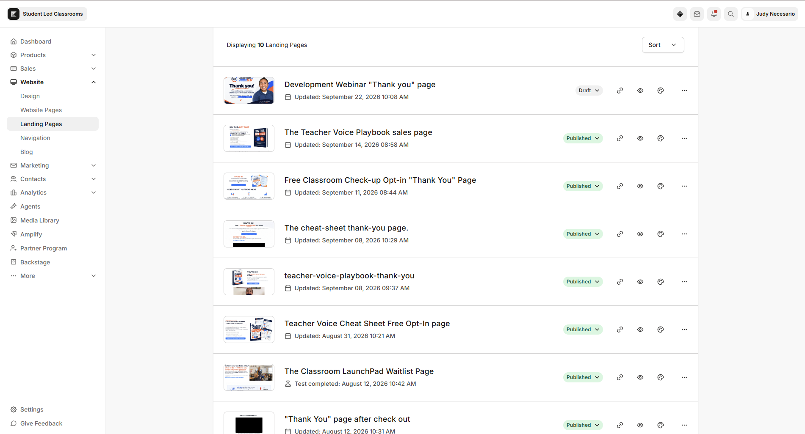

EXECUTIVE VIRTUAL ASSISTANT
Your Right Hand
in Business Success.
Helping business owners streamline operations, coordinate projects, manage Kajabi websites, and keep important tasks moving forward.

EXECUTIVE VIRTUAL ASSISTANT
Helping business owners streamline operations, coordinate projects, manage Kajabi websites, and keep important tasks moving forward.
A LITTLE ABOUT ME
Detail-oriented and proactive Administrative & Operations Virtual Assistant with a strong technical background and hands-on experience in administrative operations, project coordination, client communication, and digital content management. Skilled in preparing recurring client reports, tracking project progress, maintaining organized digital records, coordinating cross-functional workflows, and following up on deadlines and action items.
Experienced in creating branded graphics and managing content calendars using Canva, maintaining website content through Kajabi, and analyzing social media insights to support client reporting. Tech-savvy, highly organized, adaptable, and committed to delivering reliable, professional support in fast-paced remote environments.
WHAT I DO
Calendar management, recurring reports, documentation, inbox support, and file organization.
Landing pages, product updates, asset migration, and QA testing.
Task tracking, executive reporting, follow-ups, and workflow organization.
Canva graphics, content calendars, approvals, and analytics reporting.
REAL CLIENT WORK



CAREER JOURNEY
TOOLS
Kajabi
Canva
Google Workspace
Project Coordination
Executive Reporting
LET'S WORK TOGETHER
I'm available for Executive Virtual Assistant, Administrative Operations, and Kajabi Website Management opportunities.